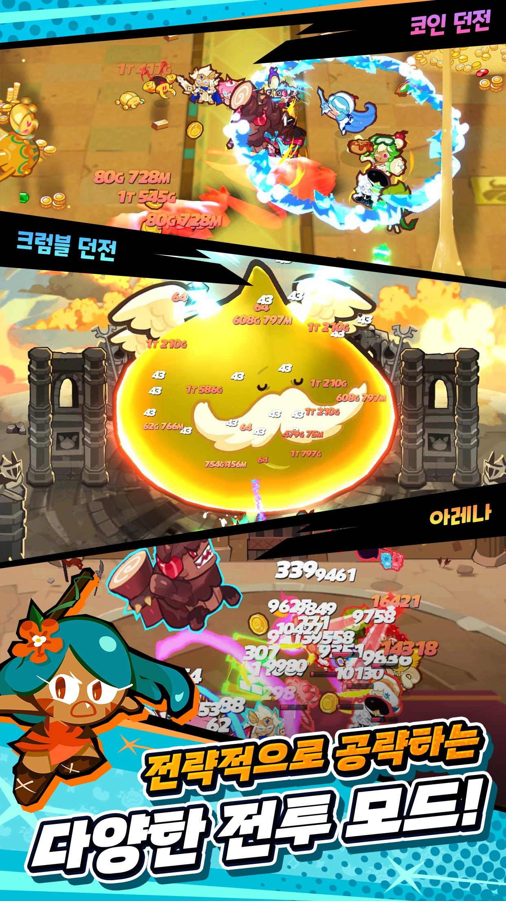

쿠키런크럼블 아레나편성 공격덱 방어덱 따로 봐야하는 이유
쿠키런크럼블 아레나는 편성 화면 자체가 공격용과 방어용으로 따로 나뉘어 있어서, 처음엔 왜 굳이 두 번 짜야 하나 싶었는데 몇 판 돌리다 보니 이유가 확 와닿더라고요. 저도 출시 초반엔 그냥 잘 쓰던 조합 하나로 공격이고 방어고 다 밀어붙였는데, 방어전 전적을 보니 계속 깨지고 있었어요.
그래서 이번엔 아레나 티어표를 또 늘어놓기보다(포지션·속성·시너지 3원칙이랑 SSR 조합 순서는 예전에 「쿠키런 크럼블 티어표 등급 공략 정리, SSR조합 짜는 법까지 정리」 글에서 이미 짚었으니까요), 아레나에서만 통하는 편성 감각만 딱 정리해볼게요.
- 공격덱이랑 방어덱을 왜 다르게 짜야 하는지
- 상대 덱을 보고 어떻게 카운터를 잡는지
- CC랑 힐에 얼마나 투자해야 하는지
- 자동 편성은 왜 아레나에서 자꾸 배신하는지

저도 처음엔 이 탭이 왜 두 개인지 대충 넘겼는데, 나중에 보니 이유가 있더라고요.
이미지 출처: 쿠키런: 크럼블 공식 사이트 · 네이버 본문엔 받아서 재업로드 권장
참고로 아레나는 공식 사이트(cookieruncrumble.com/ko) 모드 목록엔 있지만, 크럼블 던전과 달리 설명 문구 없이 아이콘만 있어서 시즌 기간이나 점수 계산 방식 같은 세세한 규칙은 공식으로 확인이 안 되는데요. 그래서 이 글도 직접 돌려본 감이랑 커뮤니티 실사용 사례로 확인되는 것만 다룰게요(2026.08.17 확인 기준).
공격 편성이랑 방어 편성, 진짜 다른 덱인가요
네, 아레나는 편성 화면이 공격용과 방어용으로 나뉘어 있고 목적도 확실히 달라요 — 공격은 짧고 굵게 이겨야 하는 덱이고, 방어는 제가 없을 때도 오래 버텨야 하는 덱이거든요.
초반엔 이 차이를 대수롭지 않게 넘겼는데, 방어덱을 공격덱이랑 똑같이 딜러 위주로 짜놨더니 순삭당하는 일이 잦더라고요. 공격덱은 제가 직접 조작하면서 짧은 시간에 상대를 눕히면 끝나지만, 방어덱은 제가 자리를 비운 사이에 상대가 알아서 공략해야 하는 입장이라 '얼마나 오래 버티느냐'가 더 중요한 값이 되는 거랍니다.
덱 하나로 밀어붙이지 말고, 애초에 목적이 다른 덱 두 개라고 생각하는 게 편해요.
방어덱 실제 사례로 본 '버티는 덱'의 정체
잠깐 짚고 가면, 쿠키런크럼블 편성 화면 자체는 속성이랑 포지션(방어·돌격·사격·지원 등)으로 라벨이 붙어 있는데요, 오븐방랑자 쿠키 카드를 보면 '🔥불속성 · ⬆돌격 · TSSR'처럼 속성·포지션·희귀도가 나란히 표기돼 있더라고요. 이 글에서 쓰는 탱커·힐러·디버프는 그 포지션들을 아레나 관점에서 다시 역할로 묶어 부르는 이름인 거고요, 포지션이 정확히 몇 가지로 나뉘는지는 자료마다 말이 갈려서 여기서는 딱 잘라 정하지 않을게요.
방어덱이 꼭 '이기는 덱'일 필요는 없다는 걸 잘 보여주는 실제 사례가 있어요 — 커뮤니티에 공유된 방어덱 사례예요.
2026년 8월 6일에 올라온 이 글은 제목부터 "재미로 만든 아레나 방어덱 공유(예능덱)"인데, 글쓴이가 밝힌 제작 목적이 인상 깊었어요. "나보다 전투력 높은 애들한테 버티면서 무승부를 노리기 위해 만든 덱"이라고요. 이길 생각을 아예 접고, 상대 전투력이 높아도 최대한 시간을 끌어서 무승부로 만드는 걸 목표로 짠 거예요. 정작 본인 평가는 "보는 맛은 있는데 성능은 쓰레기"라며 겸손하게 낮췄지만, 역할 배분 자체는 참고할 만해서 표로 정리해봤어요.
| 역할 | 쿠키 | 효과 |
|---|---|---|
| 탱커 | 코코아맛 쿠키 | 2.5초 동안 피해감소 60%로 앞라인 버팀 |
| 탱커 | 로봇(정식명: 이온맛 쿠키로봇) | 쉴드로 대미지 흡수 |
| 탱커 | 들개(정식명: 이름 모를 케이크 들개) | 피해감소로 라인 유지 |
| 힐러 | 블루베리 새 | 아군 3명 힐 + 5초간 방어력 50% 증가 |
| 힐러 | 천사맛 쿠키 | 서로 힐을 주고받는 상호 힐링 |
| 디버프 | 도넛킹(정식명: 도넛행성 에일리언 도넛킹) | 상대를 도넛으로 변이시켜 무력화 |
| 디버프 | 탐험가맛 쿠키 | 3초간 밧줄로 묶어 기절 |
※ 커뮤니티 사례 — dcinside 쿠키런 크럼블 마이너 갤러리 '천사맛'님 공유 예능덱(2026.08.06) 기준. 그대로 따라 짜라는 추천 조합이 아니라 '버티는 덱'의 역할 배분 개념을 보여주는 사례예요.
무승부도 방어전에선 손해가 아니라는 걸 실감했어요.
참고로 '들개'·'로봇'·'도넛킹'은 글쓴이가 편하게 부른 별명이고, 정식 명칭은 표에 같이 적어둔 대로예요(등급까진 저도 확인 못 했어요). 커뮤니티에서 흔히 줄여 부르는 이름이라 저도 처음엔 헷갈렸는데요. 반면 '블루베리 새'는 별명이 아니라 도감에 그대로 등재된 이름이라 그대로 뒀어요.
상대 편성 보고 카운터 잡는 법
아레나는 도전할 상대의 편성이 미리 보이는 구조라, 상대 조합에서 딜을 제일 많이 넣을 것 같은 쿠키가 누군지부터 확인하고 그걸 묶을 수 있는 CC·디버프를 골라 넣는 게 핵심이에요.
위 방어덱 사례에서 도넛킹이 상대를 도넛으로 변이시키고 탐험가맛 쿠키가 밧줄로 3초간 기절시키는 것도 결국 같은 원리예요. 상대 핵심 딜러의 행동 턴을 얼마나 뺏느냐가 승패나 버티는 시간을 갈라요. 상대 딜러가 원거리형이면 접근을 막는 CC를, 광역기 위주면 광역 저지나 실드를 우선순위로 올리는 식으로 상대를 먼저 보고 내 카운터를 맞추는 습관을 들이는 게 좋아요.

아레나 전투는 화면 가득 숫자가 튀는 정신없는 난전이에요 — 그 안에서 침착하게 카운터를 잡는 게 이 글의 핵심이고요.
이미지 출처: App Store(KR) 공식 페이지 스크린샷 · 네이버 본문엔 받아서 재업로드 권장
CC랑 힐, 얼마나 투자해야 할까 — 딜 몰빵의 함정
딜러만 잔뜩 채운 '딜 몰빵' 편성은 공격덱에선 통해도 방어덱에선 오히려 손해일 수 있어요. 이 예능덱 하나만으로 방어 전략을 확정 짓기는 이르지만, 생존 자원(CC·힐·탱커)에 최소 한두 자리는 내주는 걸 고려해볼 만해요.
방어덱은 제가 직접 조작할 수 없다 보니 순간 화력보다 얼마나 안 죽고 버티느냐가 성적을 갈라요. 위 예능덱도 딜러는 거의 없고 탱커 셋·힐러 둘·디버프 둘로 방어 특화였기 때문에 무승부를 노릴 수 있었던 거고요. 반대로 공격덱은 CC·힐 비중을 줄이고 딜러를 늘리는 쪽이 맞아요. 결국 공격덱과 방어덱에 CC·힐을 얼마나 나눠 넣을지가 조합을 통째로 다르게 짜야 하는 진짜 이유예요.
딜러만 채워 넣고 싶은 유혹이 크지만, 방어덱은 특히 참아야 하더라고요.
자동 편성 사이트, 아레나에서는 왜 한 번 더 손봐야 할까
크럼블 허브(crumblehub.co, 비공식) 같은 팬이 만든 자동 편성 사이트는 시너지 궁합만 보고 짜주는 방식이라, 상대가 있는 아레나에서는 방어력이나 타겟 우선순위까지는 잘 못 읽어낼 수 있어요.
커뮤니티에 2026년 7월 31일 크럼블 허브를 소개한 글에서도 이런 한계가 나왔어요. 개발자 본인이 "현재 실제로 딜 상승량이 어떤지 확인할 방법이 없으니 시너지 조합으로 편성했을 때 개인편차가 큰 것 같음"이라고 밝혔고, 그래서 "스테이지별로 DPS 계산해서 편성해주는 기능"을 따로 준비 중이라고 했어요. 시너지만 보고 짜주는 도구는 방어 목적까진 못 읽는다는 뜻이니까, 상대가 있는 아레나에서는 자동 편성을 뼈대로만 쓰고 탱커·CC·힐 배치는 손으로 한 번 더 조정해주는 게 좋아요.
자동으로 짠 다음 손으로 한 번만 더 봐도 방어전 성적이 꽤 달라지더라고요.
참고로 7월 31일에 커뮤니티에 아레나 쿠키 티어표가 하나 올라온 적 있는데(0티어에 바람궁수·오븐방랑자·뱀파이어·우유맛 쿠키 등이 꼽혔었어요), 8월 13일 쿨링민트맛 쿠키 업데이트 이전 스냅샷이라 지금 기준으로 그대로 가져다 쓰긴 애매해요. 이 글에서 순위를 다시 매기진 않을게요 — 종합 순위보다 지금까지 짚은 역할 배분 감각이 아레나에서는 더 오래가네요.
자주 묻는 질문
Q. 쿠키 등급(C·U·R·SR·SSR·TSSR)이 높으면 아레나에서 무조건 유리한가요?
아니요, 이 등급체계는 희귀도를 나타내는 거지 흔히 말하는 1티어·2티어 같은 성능 순위랑은 다른 개념이에요. 등급만 보고 넣기보다 탱커·힐러·디버프·딜러처럼 역할별로 상대 조합과 맞물리는지를 먼저 보는 게 아레나에서는 더 중요해요.
쿠키런크럼블 아레나편성 정리
정리하면, 아레나는 공격덱과 방어덱을 따로 봐야 하는 콘텐츠고, 방어덱은 무조건 이기는 덱이 아니라 버티는 덱으로도 짤 수 있다는 게 핵심이에요. 오늘 짚은 감각을 하나씩만 적용해봐도 방어전 전적이 확실히 달라질 거예요.
✔ 쿠키런 크럼블 같이 보기 좋은 내용
· 포지션·속성·시너지 3원칙이랑 SSR 조합 순서는 「쿠키런 크럼블 티어표 등급 공략 정리, SSR조합 짜는 법까지 정리」 글에서 더 자세히 다뤘어요.
· 스테이지가 막혀서 안 뚫릴 때 점검할 순서는 「쿠키런크럼블 10-30 스테이지 뭔지부터 챕터10~11 막히는 구간 뚫는 법 정리」 글에 정리해뒀어요.
참고한 곳
· 쿠키런: 크럼블 공식 사이트 — 모드 목록 (2026.08.17 확인)
· 쿠키런: 크럼블 App Store(KR) 공식 페이지